Nyzo version 511 (commit on GitHub) improves the accuracy of the scoring system by introducing a one-block delay between freezing blocks and counting block votes. It also activates UDP sending of block votes and improves performance of the thread that receives UDP messages.
This version affects only the verifier. The sentinel does not maintain performance scores, and it does not send or receive block votes.
In BlacklistManager, an overload of the inBlacklist() method has been added to accept a ByteBuffer directly. The old overload of the method wraps the byte array argument and uses the new overload.
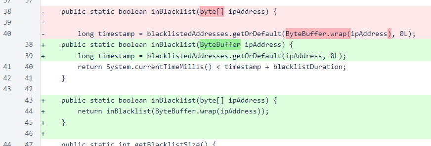The registerVote() method of BlockVoteManager now accepts votes at the current frozen edge.

In MeshListener, the single byte array packet buffer has been replaced with a queue of 50000 pre-constructed DatagramPacket instances.
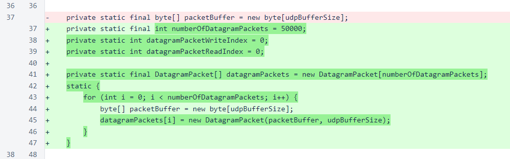In the TCP socket loop, the condition for sleeping when the verifier is paused has been removed. This was a testing mechanism that was never fully implemented, so this does not change any behavior.
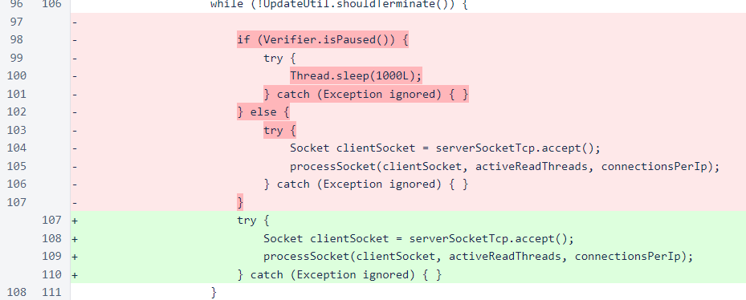The UDP read socket has been updated to only read the incoming packet and store it in the processing queue. If the processing queue is full, the packet is discarded.
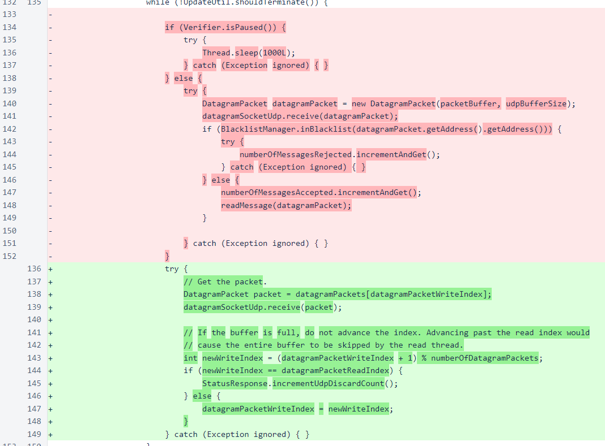A new thread has been added for processing UDP packets. Some simple checks are implemented to avoid unnecessary work for packets that are superficially useless, but the small size of the packets keeps processing overhead low in all cases.
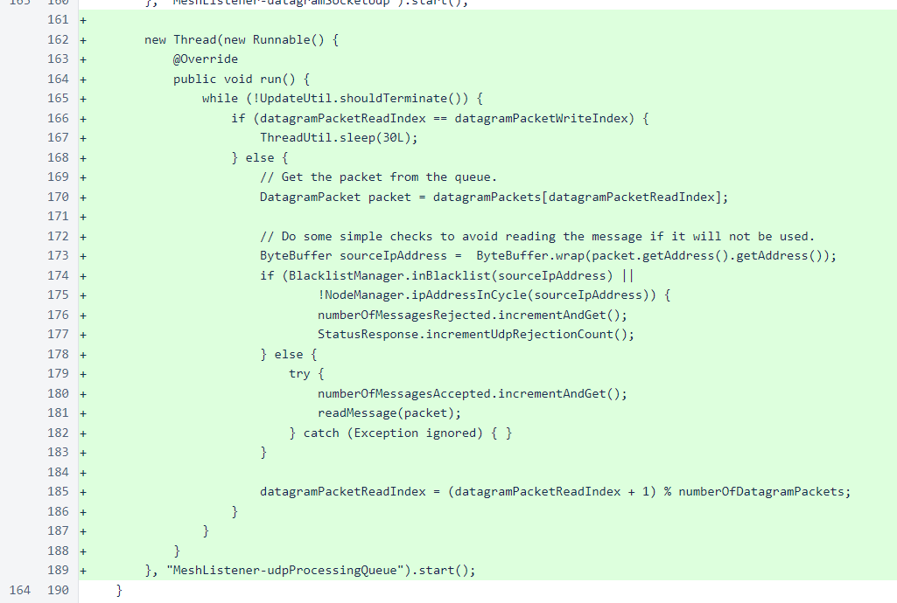When pings or UDP block votes are received, the appropriate counters in the StatusResponse class are incremented. These are temporary fields that will be removed in a few versions when the UDP code is reasonably well vetted.
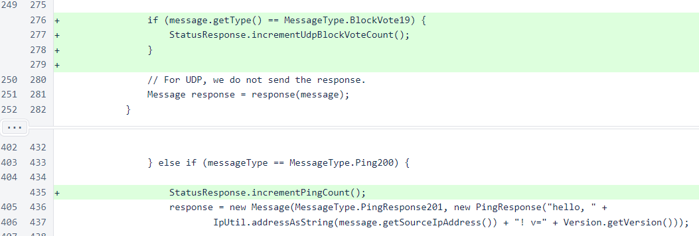In the Message.fromBytes() method, the discardMessageLength parameter has been renamed to isUdp. In addition to discarding the message length from the buffer, this parameter is now used to determine if blacklisting should be avoided for this message. Source IP addresses can be spoofed for UDP messages, so IP-based blacklisting should not be used for these messages.
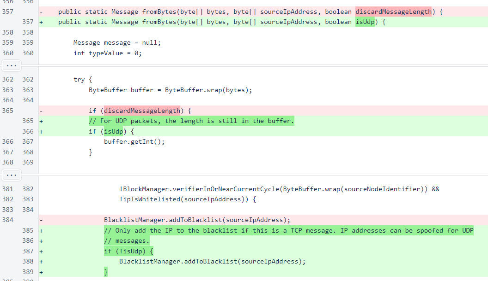In the NodeManager class, a lookup has been added to check if an IP address belongs to an in-cycle verifier. This is currently used only to check incoming UDP packets, but it will likely be used in a later version to improve performance of reading TCP messages, also.
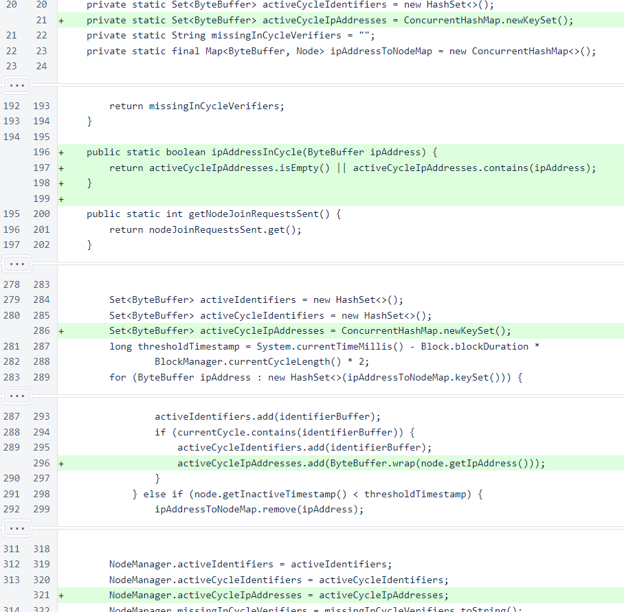Also in the NodeManager class, version 2 node-join messages are now sent. This will activate UDP block votes for all verifiers.
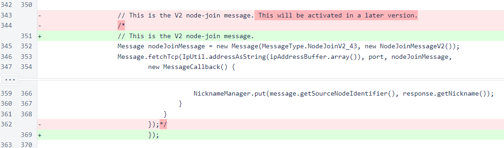In UnfrozenBlockManager, the visibility of castVote() has been changed to allow the Verifier class to cast late votes to support performance scores.
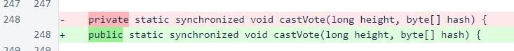In the Verifier class, a vote is now cast when a block is frozen if the verifier has not yet cast a vote at the height that is being frozen. This is an uncommon occurrence, but it allows a verifier to take full advantage of the delayed performance-score tabulation.
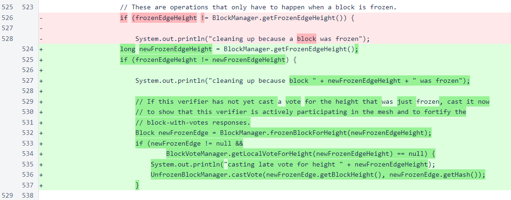Performance scores are now updated one block back from the block that was just frozen. This eliminates the possibility that minor timing issues would cause a verifier to be unfairly penalized.
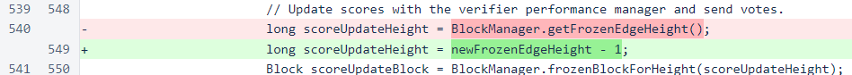In VerifierPerformanceManager, the increment has been changed to 6 and the decrement to -7. The total time that a verifier can be completely uninvolved in the mesh before receiving removal votes is still 2 days from 0, and the total credit that a verifier can earn for good performance is still an additional 2 days. However, the time required to earn that full credit is now 12 days, and a verifier now needs 6 days of good performance to make up for each day of no involvement.
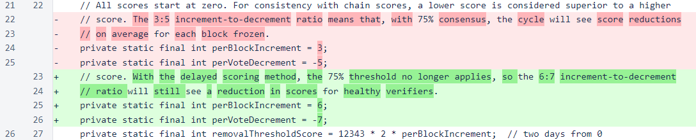The performance-score filename has been changed to version 3. This will reset all performance scores.
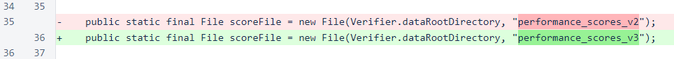In the StatusResponse class, some fields have been added for monitoring and testing the UDP functionality. Some or all of these will likely be removed in a later version.
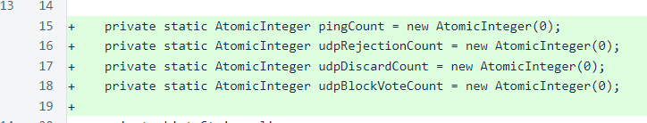The hash of the frozen edge has also been added to the status response. There have been a number of cases where groups of out-of-cycle verifiers have stalled on a common block. One possible explanation for such a stall is freezing of an incorrect block on these verifiers. Inclusion of this field will allow easy confirmation or exclusion of this explanation.
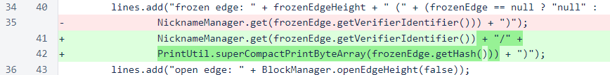A bounty will be awarded for finding the issue of using spoofed UDP packets to cause a verifier to be blacklisted. The amount and transaction will be posted here shortly.